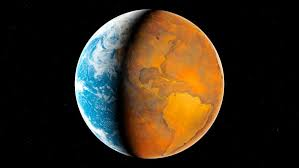

Climate Change is the defining issue of our time and we are at a defining moment.
From shifting weather patterns that threaten food production, to rising sea levels that increase the risk of
catastrophic flooding, the impacts of climate change are global in scope and unprecedented in scale. Without
drastic action today, adapting to these impacts in the future will be more difficult and costly.
The Human Fingerprint on Greenhouse Gases
Greenhouse gases occur naturally and are essential to the survival of humans and millions of other living things,
by keeping some of the sun’s warmth from reflecting back into space and making Earth livable. But after more than
a century and a half of industrialization, deforestation, and large scale agriculture, quantities of greenhouse gases
in the atmosphere have risen to record levels not seen in three million years. As populations, economies and standards
of living grow, so does the cumulative level of greenhouse gas (GHGs) emissions.
There are some basic well-established scientific links:

Obesity is a condition where a person has accumulated abnormal or excessive body fat that causes negative effects on health. For an individual,
obesity is usually the result of an imbalance between calories consumed and calories expanded. An increased consumption of high calorie foods,
without an equal increase in physical activity leads to an increase in weight. Decreased levels of physical activity will also result in an energy
imbalance and lead to weight gain.
Once it was thought as a problem of high income countries now the problem of overweight and obesity are increasing in low income and middle income
countries especially in urban areas. Since 1980 obesity has doubled worldwide. In 2014 more than 1.9 billion adults (18 years and older) and 41 million
children under the age of five were overweight. Nearly half of the children under five who were overweight or obese in 2014 lived in Asia.
Overweight and obesity are emerging health problems in India. According to National family health survey India-3 (NFHS-3), thirteen percent of women
(15-49 Years) and nine percent of men (15-49 Years) were overweight or obese in 2005-06. Overweight prevalence was higher in urban areas than rural
areas and lower in people who are involved in agriculture or manual work.
World Health Organization (WHO) defines overweight and obesity as abnormal or excessive fat accumulation that presents a risk to health. A simple measure
commonly used to classify overweight and obesity in adults is body mass index (BMI). BMI is defined as a person's weight in kilograms divided by the square
of his height in meters (kg/m2). WHO identifies overweight when BMI is greater than or equal to 25; and obesity when BMI is greater or equal to 30. In Asians,
the cut-offs for overweight (≥23.0kg/m2) and obesity (≥25.0kg/m2) are lower than WHO criteria due to risk factors and morbidities.
Overweight and obesity kills more people than underweight and act as a predisposing factor for non-communicable diseases such as cardiovascular diseases
(heart attack and stroke), diabetes, musculoskeletal disorders (osteoarthritis), some cancers (including breast, ovarian, prostate, liver, gallbladder, kidney, and colon).
Obesity during childhood also causes breathing difficulties, increased risk of fractures, hypertension, and psychological effects. In later life with high chances
of obesity, cardiovascular diseases, diabetes can lead to disability and premature death.
Overweight, obesity and their related non-communicable disease are preventable. By making the choice of healthier food and regular physical activity overweight and
obesity can be prevented.
Some glimpses of MMMUT

There are multiple societies and cultural body working in the institue which conduct various event and workshop in the institute.
These bodies play vital role in the better performance of institute and also in overall development of student and make them ready
for industry.
These societies/club are as following,
Conducting web classes for first year.
CONTACTS
Conducting cultural event ABHYUDAYA
in the institute premises.
CONTACTS